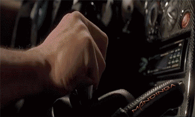

Забавни gif-чета


Assistant - "Step aside bi***es!"

Забавни снимки
We educate them through their first steps."
Няколко вица
Майкрософт обмислял да пусне нова руска версия на Windows. При нея вместо надпис “Открито е ново устройство, да инсталирам ли драйвери”, ще излиза надпис “Открито е ново устройство. Трябва да го полеем!”
Бил Гейтс се возел в колата си с двама членове на борда на директорите на Microsoft. Изведнъж колата се развалила и спътниците на Бил Гейтс започнали да се карат каква точно е причината. Той самият ги слушал известно време, а след това попитал спокойно:
– Колеги, не може ли просто да излезем от колата и после пак да влезем?
Един геймър умрял и го пратили в ада. След една седмица главният дявол бяга при Господ и реве:
- Какъв е този, дето си ми го пратил? - Господ недоумява.
- Не мога повече! Вземаи го при теб!
- Защо, бе? - пита Господ.
- Как защо! Изби всички дяволи, обърна всички казани и пита къде е изхода за следващото ниво
В самолет се качват Бил Гейтс, Майкъл Джордан, папата и скаут с раница с храна. В един момент от полета пилотът излиза от кабината и казва:
- Самолетът пада, ние сме пет човека, а парашутите са четири – взима парашут и скача.
Майкъл Джордан разблъсква всички:
- Аз съм най-великият баскетболист в света, трябва да оцелея! – взима си парашут и скача.
Бил Гейтс се промъква мазно между папата и скаута и измъква един парашут:
- Аз съм най-умният човек в света, трябва да бъда спасен! – и скача.
Остават папата и скаута с един парашут. Папата:
- Сине мой, аз съм стар, Бог ще се погрижи за мен, скачай, спасявай се. - А-а-а, няма нужда.
Най-умният човек в света скочи с раницата с храната.